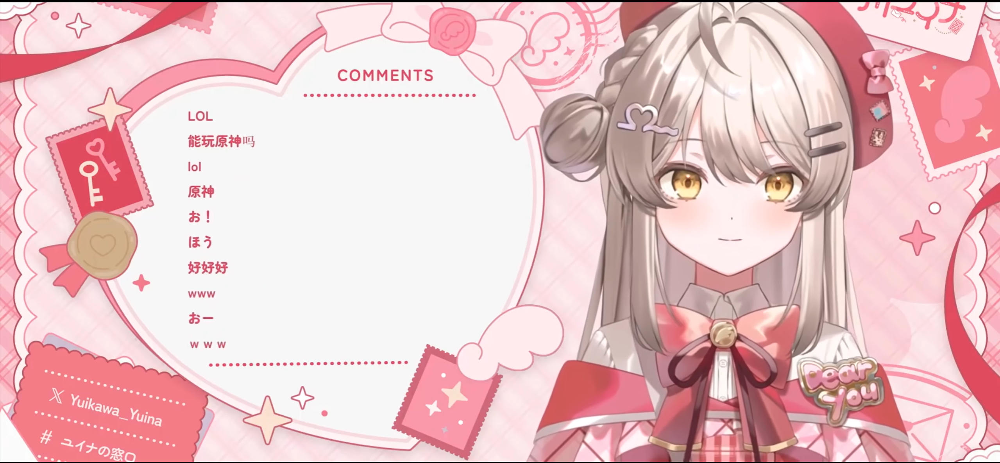
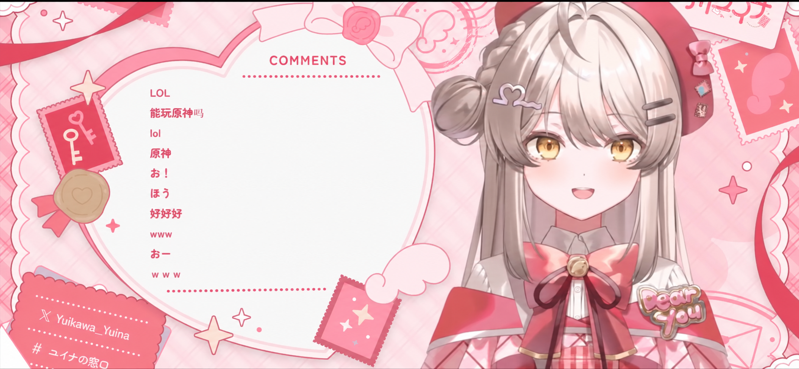
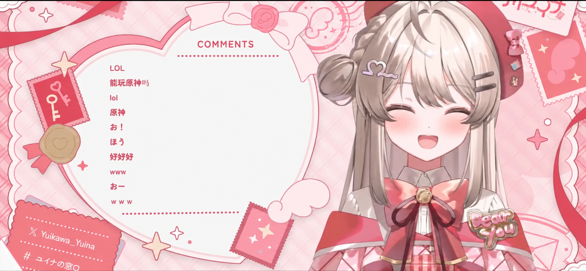

LIVE · 游戏模拟
▶00:00
◖))⛶
LIVE MODERATION GAME
抓住串子
本关规则：中文除单纯打招呼外都要抓；日文按内容判断。
热度30
抓中0
误抓0
漏抓0
连击×0
直接点击可见弹幕即抓住。弹幕离开画面会自动放行。日文弹幕附中文翻译。
游戏制作 @-会飞的蝈蝈- UID 443211651打开我的 B 站主页 ↗
粉丝制作的模拟游戏，与主播、所属团体及 YouTube 无关联。部分弹幕文字取自玩家提供的录屏；用户名已隐去。游戏判定只执行本关规则，不推断真实发言者的国籍或意图。